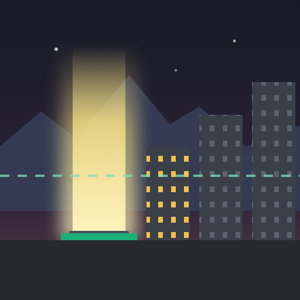

All the Way Back
Every pre-break record, taken back one run at a time.
OpenTo put it on your home screen: tap Share, then Add to Home Screen. After that the icon opens straight into the app.

Every pre-break record, taken back one run at a time.
OpenTo put it on your home screen: tap Share, then Add to Home Screen. After that the icon opens straight into the app.